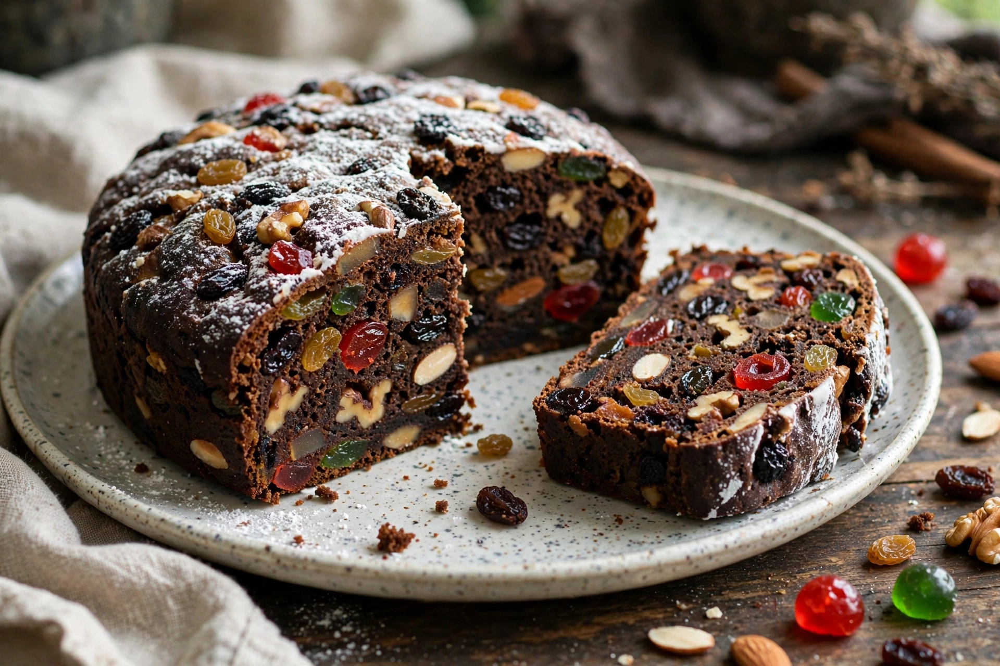

| Type | Cake |
|---|---|
| Main ingredients | Candied or dried fruit, nuts, spices, flour, eggs, sugar; sometimes spirits |
| Variations | Christmas cake, Dundee cake, wedding cake, panforte, stollen (related) |
| Serving occasions | Christmas, weddings, celebrations |
Fruitcake (or fruit cake or fruit bread) is a cake made with candied or dried fruit, nuts, and spices, and optionally soaked in spirits. In the United Kingdom, certain rich versions may be iced and decorated. Fruitcakes are typically served in celebration of weddings and Christmas.
The earliest ancestor was the Roman satura, a barley mash mixed with pine nuts, raisins and pomegranate seeds. In the Middle Ages, dried fruits, honey and spices were added, and crusaders and travellers carried such cakes because they kept well. As cheap sugar and dried fruit arrived from colonies in the 16th–18th centuries, rich fruitcakes became festive staples in Britain; the traditional tiered wedding cake of royalty and the aristocracy was fruitcake, a custom that persists in British royal weddings.
High sugar and, where used, alcohol inhibit spoilage; fruitcakes are traditionally made weeks ahead and "fed" with spirits. Properly stored cakes can keep for years — a fruitcake from Robert Falcon Scott's Terra Nova expedition (1911) was found in Antarctica in 2017 reportedly in excellent condition.
Truman Capote's memoir "A Christmas Memory" ("It's fruitcake weather!") is a beloved American account of making the cakes. In slang, "fruitcake" can denote an eccentric person ("nutty as a fruitcake").
See also: Christmas · Christmas pudding · Stollen